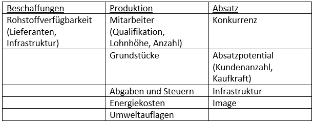
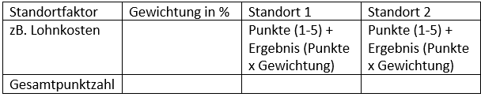

Standortfaktoren
Standortfaktoren sind Kriterien, nach denen ein Betrieb sich seinen Standort auswählt. Sie beeinflussen den Ertrag und Aufwand eines Betriebs und somit den Gewinn (Gewinn= Ertrag-Aufwand).
Ein Beispiel für wichtige Standortfaktoren, die Unternehmer zur Entscheidung benötigen:

Man unterscheidet zwischen harten und weichen Standortfaktoren.
Harte Standortfaktoren: sind objektiv, kostenmäßig qualifizierbar
Beispiele: Lohn, Steuern, Infrastruktur, Abgaben, Subventionen.
Weiche Standortfaktoren: sind subjektiv, nicht bis schlecht kalkulierbar oder messbar.
Bei der Entscheidung der Standortwahl ist eine Nutzwerkanalyse hilfreich. Mit einer Nutzwerkanalyse lässt sich die Entscheidung ökonomisch begründen sowie systematisch und nachvollziehbar planen und gestalten.
Die Nutzwerkanalyse geht dabei in vier Schritten vor:
1. Bestimmung der Entscheidungskriterien
2. Bewertung/Bepunktung der verschiedenen Alternativen
3. Gewichtung der Entscheidungskriterien
4. Auswahl der optimalen Alternative
